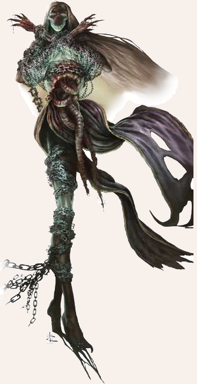

"Die Welt und alle Götter werden beben vor seiner Macht, wenn er sich eines Tages erhebt! Die Augen in ihren Gesichtern werden zerspringen, wenn er ihnen sein Antlitz zeigt"

Aspekte: Macht, Herrschaft, Hass, Zerstörung, Lüge
Symbole/Wahrzeichen: goldene Maske, Rattenpilz, Sternenleere
Heiliges Tier: Ratte (Spinnen bei den Tulamiden)
Der bedeutendste Gegenspieler der Zwölfgötter ist der Namenlose.
Es heißt, dass er den Dämonen aus dem Draußen der Siebten Sphäre Einlass zur Schöpfung gewährte, aus Zorn darüber, dass ihm die alleinige Herrschaft verwehrt wurde.
Die Zwölfgötter straften ihn für diesen Verrat und tilgten seinen Namen Silbe für Silbe aus dem Gedächtnis der Welt.
Sie ketteten ihn in die Große Bresche, die er einst selbst in den Sternenwall geschlagen hatte, um den Dämonen Zugang zur Dritten Sphäre zu verschaffen.
Manche Mystiker behaupten, dass auch der Namenlose kein Freund des Chaos sei, sondern die Schöpfung zerstört wissen wolle, so er sie nicht nach seinem Willen ordnen könne.
Zwischen den Jahren steht die Sternenleere am Höchsten, die der Namenlose dem Mythos nach zwischen Rahjas Leidenschaft und Praios Gesetz schlug - dort, wo der Zwölfkreis am verletzlichsten war.
Die fünf namenlosen Tage zwischen den Jahren stehen allein unter seiner Herrschaft und gelten als unheilbringend und verlucht.
Die Aspekte, die dem Namenlosen zugeschrieben werden, sind Macht und Herrschaft, aber auch Selbstsucht, Rache, Versuchung, Lüge, Verrat, Heimtücke, Hass und Zerstörung und sogar Selbstverstümmelung.
Es mag bezeichnend sein, dass kaum ein Gott mit so vielen Namen und Umschreibungen belegt wurde wie er.
Sein wahrer Name scheint seit Äonen vergessen zu sein, als habe jemand ihn mit voller Absicht aus der Schöpfung getilgt.
Der Gott ohne Namen, Gesichtsloser und Dreizehnter wird er lüsternd genannt, oder als Rattenkind verlucht.
Die Tulamiden nennen ihn Iblis, den Netzweber, Nivesen fürchten den Überzähligen, Maraskaner luchen auf den Bruderoder Geschwisterlosen. Waldmenschenvölker kennen ihn als Burdaq, der seines Tapams beraubt wurde, die Elfen lüstern vom dhaza (Isdira: das-das-Sein-bekämpft), während die in Ewigkeit meißelnden Zwerge alles Übel der Welt auf den goldenen Drachen schieben.
Innerhalb seiner zahllosen verborgenen Kulte wird der Namenlose auch der Verheißene genannt, der Purpurne, Er-der-liegt oder Herrscher der Herrscher.
Manche seiner Anhänger sollen ihn ehrfürchtig Goldener Gott oder auch Güldener rufen und wenige glauben zu wissen, dass er der Ältere der Äonen ist, der erste Gott und ursprüngliche Herrscher der Welt, der gewaltsam um sein Erbe gebracht wurde.
Ans Firmament gekettet spinnt der Namenlose seit Äonen seine Intrigen und sammelt Anhänger, um sich eines Tages befreien zu können.
Seine Stärke sind die Lüge und die Verführung.
Er wird oft als goldener Mann ohne Gesicht dargestellt, begleitet von Ratten, Krähen und dreizehnbeinigen Spinnen.
Dem Namenlosen dienen der Legende nach etliche Kreaturen, Monstrositäten und auch kulturschaffende Wesen.
Seine Anhänger und Geweihten verbergen sich gerne hinter einer Maske von Rechtschaffenheit, preisen aber insgeheim den Untergang der bestehenden Ordnung und erhoffen sich eine wichtige Rolle in seiner neuen Weltordnung.
Finstre Kapellen sollen die Kulte des Namenlosen unterhalten, die in allen Gegenden Aventuriens vermutet werden und an deren Altären sie schaurige Blutopfer darbringen.
Seine Geweihten, so heißt es, müssten sich selbst verstümmeln, um in die tieferen Mysterien des Kultes vorzudringen.
Die Verheißung von grenzenloser Macht und einem kommenden 13. Zeitalter unter seiner Herrschaft lässt viele seinen dunklen Lehren verfallen, seien es dekadente Adlige, skrupellose Großbürger, hasserfüllte Söldner oder unterdrückte Unfreie, die sich sicher sind, etwas Besseres verdient zu haben.
Die Priester des Namenlosen sind für ihre Überzeugungskraft und Manipulationsfähigkeiten berüchtigt.
Viele von ihnen sind herausragende Täuscher und tragen dazu bei, dass der Kult durch Intrigen, Morde und dunkle Wunder Glaubensgemeinschaften, Tempel, Herrscher und sogar ganze Reiche unterwandern und manchmal auch zu Fall bringen kann.
Kaum ein Zwölfgöttergläubiger aber weiß, welche Macht der Dreizehnte seinen Diener gewährt, damit sie sein Werk tun können.
Die mächtigsten unter ihnen sollen die Zunge des Namenlosen und seine 13 Augen sein.
Die Liturgien der Zwölfgötter prallen wirkungslos an ihnen ab und ihr Wort ist in der Lage, selbst Dämonen zu befehligen.
Beunruhigenderweise stimmen die Legenden und Mythen zahlreicher Völker darin überein, dass es einst zum Kampf kommen wird, in dem die Gegner des Namenlosen unterliegen werden.
Es ist also nicht ausgeschlossen, dass solchen Überlieferungen ein wahrer Kern innewohnen könnte.